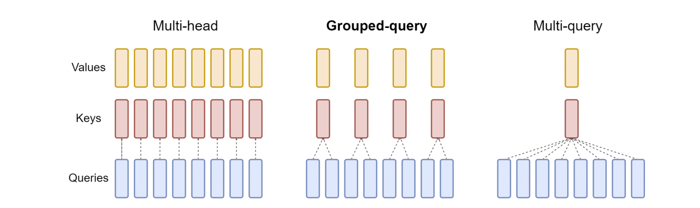
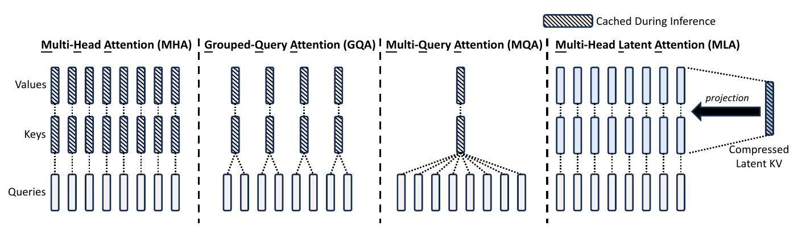
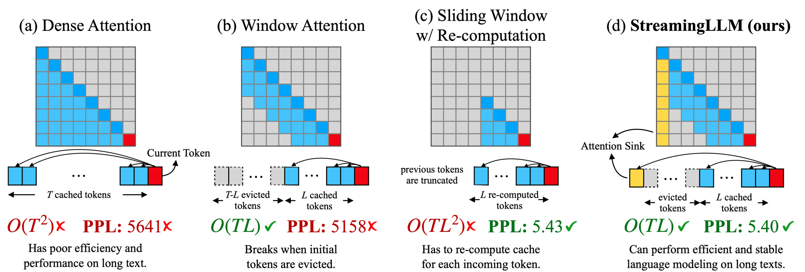
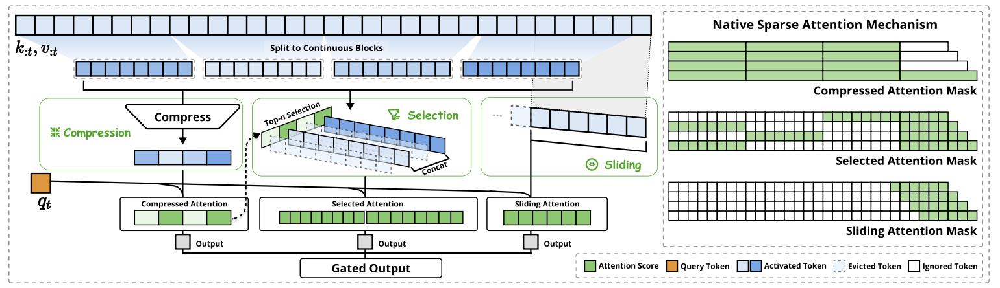
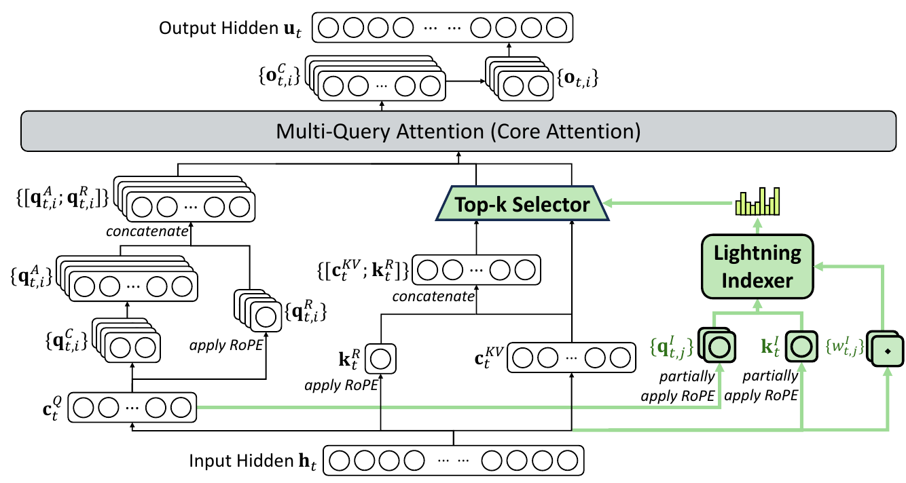
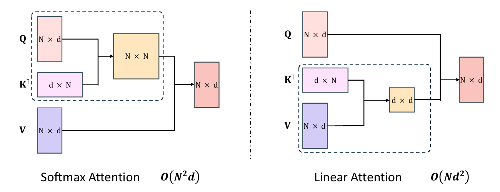
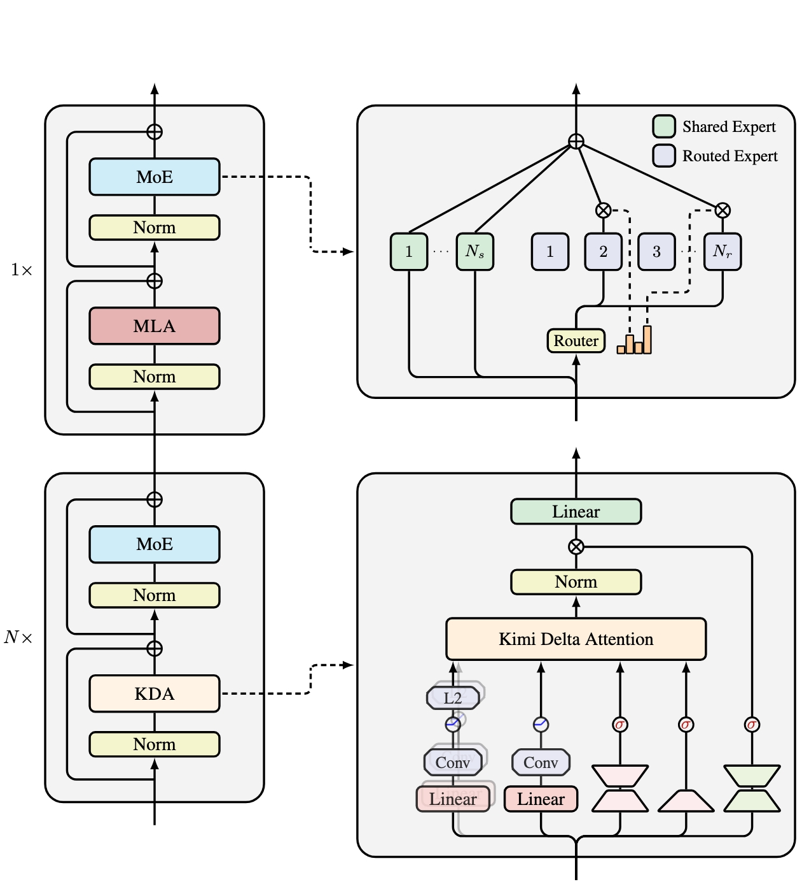
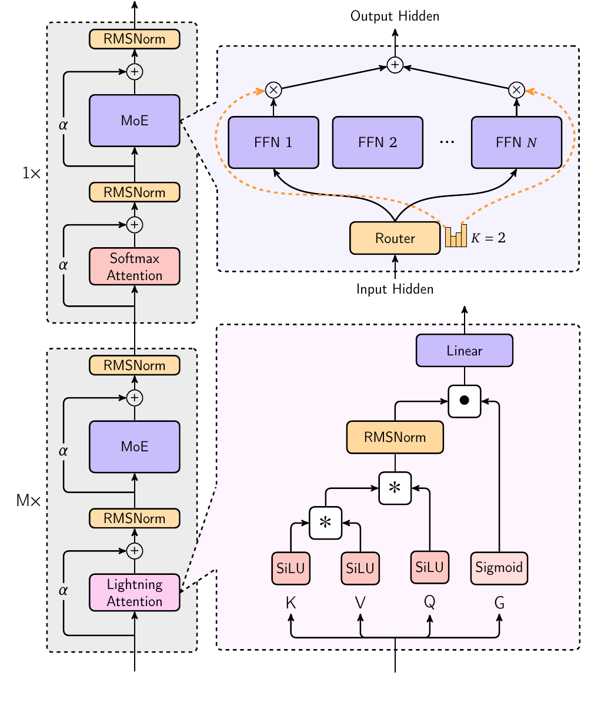
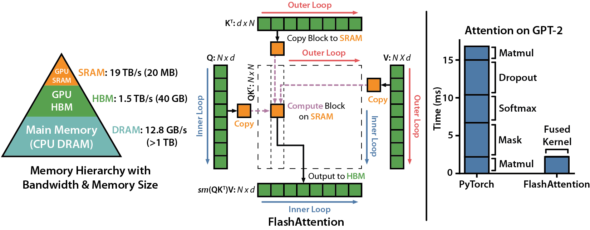

0. 这一篇讲什么
第 1 篇讲了缩放点积注意力和多头注意力的原始形式。它们有两个代价随序列长度 $L$ 增长：
- 计算：每一层要算 $L\times L$ 的分数矩阵，训练和 prefill 的计算量是 $O(L^2d)$；
- 缓存：自回归生成时要保存所有历史 token 的 K、V（KV Cache），显存随 $L$ 线性增长，而且每生成一个 token 都要把整个缓存读一遍。
过去几年出现的注意力变体，几乎都可以归入下面几类，这也是本篇的路线：
问题 做法 本篇
──────────────────────────────────────────────────────────────────────────────────────
KV Cache 太大 多个查询头共享 K、V：MQA、GQA 第 3 节
把 K、V 压成低维隐变量：MLA 第 4 节
每个 token 看的历史太多 只看最近 w 个：滑动窗口、局部/全局交错 第 5 节
按内容挑出少量历史：NSA、DSA 第 6 节
历史不必逐个保存 压成固定大小的状态：线性注意力 第 7 节
状态的增删改：DeltaNet、GDN、KDA 第 8 节
分块高效计算：Lightning Attention 第 9 节
单一机制各有短板 不同注意力按比例堆叠：混合架构 第 10 节
同样的数学，更少的显存读写 FlashAttention、PagedAttention 第 11 节
第 1 节先回顾基础版本，并补充第 1 篇没有展开的几个点；第 2 节讲 KV Cache 和推理的两个阶段，因为后面大部分变体都是为解码阶段服务的。
文中记 $L$ 为序列长度，$d$ 为隐藏维度，$n_h$ 为查询头数，$d_h$ 为每个头的维度，$n_{\text{layer}}$ 为层数。
1. 回顾：缩放点积与多头注意力
1.1 公式与形状
对输入 $X\in\mathbb R^{L\times d}$，每个头 $i$ 有自己的投影：
$$ Q_i = XW_Q^{(i)},\quad K_i = XW_K^{(i)},\quad V_i = XW_V^{(i)},\qquad W^{(i)}_{\{Q,K,V\}}\in\mathbb R^{d\times d_h} $$
$$ \text{head}_i = \mathrm{softmax}\!\left(\frac{Q_iK_i^\top}{\sqrt{d_h}} + M\right)V_i,\qquad \mathrm{MHA}(X) = [\text{head}_1;\dots;\text{head}_{n_h}]\,W_O $$
$M$ 是掩码（因果注意力中 $M_{ij} = -\infty$ 当 $j>i$，否则为 0）。原始 Transformer 中 $n_hd_h = d$。
单个 token $t$ 的视角更适合讨论推理：
$$ o_{t,i} = \sum_{j\le t}\frac{\exp(q_{t,i}^\top k_{j,i}/\sqrt{d_h})}{\sum_{j'\le t}\exp(q_{t,i}^\top k_{j',i}/\sqrt{d_h})}\,v_{j,i} $$
当前 token 的查询 $q_t$ 要和所有历史 token 的键 $k_j$ 做内积，再对所有历史的值 $v_j$ 加权平均。
1.2 为什么除以 $\sqrt{d_h}$：再补一个梯度的视角
第 1 篇从方差推导过：$q, k$ 各分量独立、均值 0、方差 1 时 $\mathrm{Var}(q^\top k) = d_h$，除以 $\sqrt{d_h}$ 把方差拉回 1。
为什么分数的方差大了不好？看 softmax 的雅可比矩阵。设 $a = \mathrm{softmax}(s)$，则
$$ \frac{\partial a_i}{\partial s_j} = a_i(\mathbb 1[i=j] - a_j) $$
如果分数的尺度很大，softmax 接近 one-hot：某个 $a_m\approx 1$，其余 $\approx 0$。此时每一项 $a_i(\mathbb 1[i=j]-a_j)$ 都接近 0（$i=m$ 时 $a_m(1-a_m)\approx 0$，$i\ne m$ 时 $a_i\approx 0$）。梯度几乎消失，注意力模式一旦"锁死"就很难再学。 缩放把 softmax 保持在比较平滑的区域。
这个问题在训练中仍可能出现：即使初始化时方差合适，训练过程中 $q$、$k$ 的范数也可能不断变大，使分数尺度失控。第 4 篇的 QK-Norm 就是从这里出发的。
1.3 注意力在哪里花钱
每个 token 在一层中的前向计算量（一次乘加记 2 次浮点运算）：
| 部分 | 浮点运算 | 说明 |
|---|---|---|
| Q、K、V、O 四个投影 | $8d^2$ | 与 $L$ 无关 |
| $q^\top k$（对 $L$ 个历史） | $2Ld$ | 随 $L$ 线性增长 |
| 对 $v$ 加权求和 | $2Ld$ | 随 $L$ 线性增长 |
| FFN（$d_{\text{ff}} = 4d$） | $16d^2$ | 与 $L$ 无关 |
与 $L$ 有关的部分是 $4Ld$，与 $L$ 无关的部分是 $24d^2$。两者相等时 $L = 6d$。对 $d = 4096$ 的模型，大约 $L\approx 2.5$ 万时注意力的计算开始超过其余所有部分。所以短上下文时注意力的平方复杂度并不是主要开销，长上下文时才是。但 KV Cache 的显存和读取开销从很短的长度就开始重要了，见第 2 节。
1.4 注意力沉没（attention sink）
一个后面会反复出现的现象：训练好的语言模型中，很多头会把大量注意力权重放在序列的第一个 token（或者少数几个固定 token）上，不管它的内容是什么（Xiao et al., 2023）。
原因在于 softmax 的权重必须加起来等于 1。当一个头在当前位置"没什么需要关注的"时，它也必须把权重分给某些 token。模型学会了把多余的权重倒给一个几乎不贡献信息的位置（第一个 token 对所有后续位置都可见，最适合当这个"垃圾桶"）。这些 token 被称为注意力沉没。
这件事有两个直接后果：
- 用滑动窗口截掉开头的 token 时，模型会崩溃，因为沉没位置不见了（第 5 节）；
- 一些新设计会显式地给模型一个"不关注"的出口，例如可学习的沉没 logit，或者在注意力输出上加门控（第 10 节）。
2. KV Cache 与 Prefill / Decode
2.1 为什么可以缓存 K、V
自回归生成时，第 $t$ 步要计算
$$ o_t = \mathrm{Attn}(q_t;\ k_1,\dots,k_t;\ v_1,\dots,v_t) $$
在因果掩码下，历史 token 的表示不会因为新 token 的到来而改变：位置 $j$ 只能看到 $\le j$ 的 token，所以 $k_j, v_j$ 在第 $j$ 步算出来之后就固定了（每一层都是如此，归纳可证）。于是：
- 第 $t$ 步只需要为新 token 计算 $q_t, k_t, v_t$；
- 把 $k_t, v_t$ 追加到缓存里，用 $q_t$ 和整个缓存做注意力。
不缓存的话，第 $t$ 步要把整个前缀重新算一遍，生成 $n$ 个 token 的总计算量是 $O(n^2)$ 次前向；缓存之后每一步只处理一个 token。
本质. KV Cache 省掉的是历史 token 的投影和所有之前层的计算。它成立的前提是因果掩码：双向注意力中，新 token 会改变所有旧 token 的表示，不能这样缓存。
为什么没有 Q Cache. 第 $t$ 步只用到当前的 $q_t$。过去的 $q_j$ 只在第 $j$ 步计算 $o_j$ 时用过一次，之后再也不会参与计算，缓存它没有意义。
与 RoPE 配合. 使用 RoPE 时，缓存的是旋转之后的 $k$（第 2 篇 4.5 节）：$x\to W_K\to k\to \mathrm{RoPE}(k, \text{pos})\to$ 缓存。因为 $k_j$ 的旋转角只取决于它自己的位置 $j$，之后不会变。
2.2 缓存有多大
每个 token、每一层要存 $K$ 和 $V$ 各 $n_{kv}\cdot d_h$ 个数（$n_{kv}$ 是 K、V 的头数，标准 MHA 中 $n_{kv} = n_h$）。总大小为
$$ \text{KV Cache} = 2\times n_{\text{layer}}\times n_{kv}\times d_h\times L\times B\times\text{每个数的字节数} $$
几个例子（按公开配置，16 位精度）：
| 模型 | 注意力 | $n_{\text{layer}}$ | $n_{kv}\times d_h$ | 每 token 缓存 | 4K 上下文、单条序列 |
|---|---|---|---|---|---|
| Llama 2 7B | MHA | 32 | $32\times 128$ | 512 KiB | 2 GiB |
| Llama 2 70B | GQA | 80 | $8\times 128$ | 320 KiB | 1.25 GiB |
| Llama 3 8B | GQA | 32 | $8\times 128$ | 128 KiB | 0.5 GiB |
| DeepSeek-V2 | MLA | 60 | 每层 576 个数 | 约 67.5 KiB | 约 0.26 GiB |
Llama 2 7B 的权重本身约 13.5 GB，而 32 条 4K 序列的 KV Cache 就要 64 GiB。服务大量并发请求或长上下文时，KV Cache 而不是权重才是显存的主要占用者。 第 3、4 节的 GQA 和 MLA 都是在压缩这一项。
2.3 Prefill 与 Decode
一次生成分两个阶段：
- Prefill（预填充）：把用户的整个提示词一次性送进模型，并行算出所有位置的 K、V，填满缓存，并得到第一个输出 token；
- Decode（解码）：之后每一步只输入一个新 token，读出整个缓存，算出下一个 token，追加 K、V。
两个阶段的性能瓶颈完全不同。衡量方法是算术强度：每从显存读一个字节，能做多少次浮点运算。以 H100 为例，16 位稠密矩阵乘法约 989 TFLOPS，显存带宽约 3.35 TB/s，两者之比约为 295 FLOPs/字节。算术强度低于这个值，GPU 在等数据（访存瓶颈）；高于这个值，GPU 在全力计算（计算瓶颈）。
Prefill 是计算瓶颈. 权重读一次，要和提示词中的 $L$ 个 token 都相乘。一个 $d\times d$ 的权重矩阵读入 $2d^2$ 字节，做 $2Ld^2$ 次运算，算术强度约为 $L$。提示词有几百上千个 token 时，远高于 295。
Decode 是访存瓶颈. 每一步只有一个 token（每条序列），读入整个模型的权重（约 $2N$ 字节）只做 $2N$ 次运算，算术强度约为 1。GPU 的计算单元大部分时间在等数据。
批处理能缓解权重部分：$B$ 条序列同时解码时，权重读一次用 $B$ 次，算术强度约为 $B$。但 KV Cache 不能这样分摊：每条序列的缓存是它自己的，只被它自己的查询使用。标准 MHA 中，缓存里的每个 $k$ 只和一个查询头的 $q$ 做一次内积，每个数（2 字节）只参与 2 次运算，算术强度约为 1，与批大小无关。上下文越长，解码时间里读 KV Cache 的比例越大。
所以解码阶段的优化有两个方向：
- 少存、少读：缓存更小，读得更少（GQA、MLA、滑动窗口、稀疏选择、固定状态）；
- 每读一个数多算几次：让多个查询头共享同一份 K、V，算术强度从 1 提高到组大小（GQA）乃至所有头数（MLA）。
第 3、4 节会看到，MQA、GQA、MLA 恰好同时做到了这两点。
2.4 一个带 KV Cache 的实现
下面实现带 KV Cache 的因果 GQA（第 3 节解释 GQA；$n_{kv} = n_h$ 时就是普通的 MHA）。同一个函数同时用于训练、prefill 和 decode：
import math
import torch
import torch.nn as nn
import torch.nn.functional as F
class CausalGQA(nn.Module):
"""带 KV Cache 的因果注意力。n_kv_heads == n_heads 是 MHA，== 1 是 MQA"""
def __init__(self, d_model, n_heads, n_kv_heads):
super().__init__()
assert d_model % n_heads == 0 and n_heads % n_kv_heads == 0
self.n_heads, self.n_kv_heads = n_heads, n_kv_heads
self.d_head = d_model // n_heads
self.W_q = nn.Linear(d_model, n_heads * self.d_head, bias=False)
self.W_k = nn.Linear(d_model, n_kv_heads * self.d_head, bias=False)
self.W_v = nn.Linear(d_model, n_kv_heads * self.d_head, bias=False)
self.W_o = nn.Linear(n_heads * self.d_head, d_model, bias=False)
def forward(self, x, cache=None):
# x: [B, T, d]；cache: (K, V)，各为 [B, n_kv_heads, T_past, d_head]，或 None
B, T, _ = x.shape
q = self.W_q(x).view(B, T, self.n_heads, self.d_head).transpose(1, 2)
k = self.W_k(x).view(B, T, self.n_kv_heads, self.d_head).transpose(1, 2)
v = self.W_v(x).view(B, T, self.n_kv_heads, self.d_head).transpose(1, 2)
# （使用 RoPE 时在这里旋转 q 和 k，缓存的是旋转后的 k）
if cache is not None:
k = torch.cat([cache[0], k], dim=2)
v = torch.cat([cache[1], v], dim=2)
new_cache = (k, v) # 缓存的是 n_kv_heads 个头，而不是 n_heads 个
T_past = k.size(2) - T
# 每个 KV 头复制给组内的 n_heads / n_kv_heads 个查询头
rep = self.n_heads // self.n_kv_heads
k = k.repeat_interleave(rep, dim=1) # [B, n_heads, T_past + T, d_head]
v = v.repeat_interleave(rep, dim=1)
scores = q @ k.transpose(-2, -1) / math.sqrt(self.d_head) # [B, H, T, T_past + T]
# 第 i 个新 token 的绝对位置是 T_past + i，只能看到绝对位置不超过它的键
i = torch.arange(T, device=x.device)[:, None] + T_past
j = torch.arange(T_past + T, device=x.device)[None, :]
scores = scores.masked_fill(j > i, float('-inf'))
out = F.softmax(scores, dim=-1) @ v # [B, H, T, d_head]
return self.W_o(out.transpose(1, 2).reshape(B, T, -1)), new_cache
attn = CausalGQA(d_model=512, n_heads=8, n_kv_heads=2)
x = torch.randn(1, 10, 512)
y_full, _ = attn(x) # 训练：一次处理全部 10 个 token
y, cache = attn(x[:, :6]) # prefill：前 6 个 token
outs = [y]
for t in range(6, 10): # decode：逐个 token
y, cache = attn(x[:, t:t + 1], cache)
outs.append(y)
print(torch.allclose(y_full, torch.cat(outs, dim=1), atol=1e-5)) # True
几个细节：
- 掩码用的是绝对位置。prefill 时 $T>1$，新 token 之间有因果关系；decode 时 $T=1$，掩码全部为可见；
repeat_interleave让第 $h$ 个查询头使用第 $\lfloor h/\text{rep}\rfloor$ 个 KV 头。实际的高效实现（如 FlashAttention 的 GQA 支持）不会真的复制，而是在内核里按组索引；- 这里用
torch.cat拼接缓存，每步都会重新分配显存。工程实现会预先分配或分页管理（第 11.4 节）。
（本文的 PyTorch 代码没有在 PyTorch 环境中运行过；同样逻辑的 NumPy 版本验证过训练形式与逐步解码的输出一致。）
3. MQA 与 GQA：多个查询头共享 K、V
3.1 MQA
Multi-Query Attention（Shazeer, 2019）：保留 $n_h$ 个查询头，但所有头共享同一组 $K$、$V$：
$$ \text{head}_i = \mathrm{softmax}\!\left(\frac{Q_iK^\top}{\sqrt{d_h}}\right)V,\qquad K = XW_K,\ V = XW_V,\ W_K, W_V\in\mathbb R^{d\times d_h} $$
- KV Cache 缩小到 MHA 的 $1/n_h$；
- 解码时每个缓存的 $k$ 被 $n_h$ 个查询头使用，算术强度提高 $n_h$ 倍；
- 代价：所有头只能从同一组 K、V 中读取信息，表达能力下降，质量有损，训练也可能更不稳定。
PaLM、Falcon-7B、StarCoder、Gemma 2B 等使用 MQA。
3.2 GQA
Grouped-Query Attention（Ainslie et al., 2023）是折中：把 $n_h$ 个查询头分成 $g$ 组，组内共享一组 K、V，共有 $n_{kv} = g$ 组 K、V。
- $g = n_h$：每个查询头有自己的 K、V，就是 MHA；
- $g = 1$：所有头共享，就是 MQA；
- 典型配置 $n_h = 32$ 或 64，$g = 8$。

KV Cache 是 MHA 的 $g/n_h$，解码时的算术强度约为组大小 $n_h/g$。经验上，$g = 8$ 时质量接近 MHA，而缓存缩小 4 到 8 倍。
从 MHA 转换. GQA 论文还给出了一个廉价的转换方法：把已训练的 MHA 模型中同组的 K、V 投影矩阵取平均，作为该组共享的投影，然后用原预训练约 5% 的计算量继续训练（uptraining），就能恢复大部分质量。
谁在用. Llama 2 的 34B、70B（7B、13B 仍是 MHA），Llama 3 全系列（8 个 KV 头），Mistral 7B，Qwen2 及之后的 Qwen 系列等。今天 GQA 是稠密注意力的默认选择。
3.3 为什么共享 K、V 损失不大
一个直观的解释：多头注意力中不同头的差异，主要体现在查询上，即每个头在"找什么"。K、V 是被查找的内容，同一个 token 被不同头查找时，所需的表示可以有很大重叠。GQA 保留了所有查询头的多样性，只在被查找的一侧共享。
另一个角度：MHA 的 $W_K$ 是 $d\times d$ 的，把它拆成 $n_h$ 个头后，各头的 K 之间往往有很强的相关性（实际上是低秩的）。共享 K、V 相当于显式地利用了这种低秩结构。MLA 把这个思路推到了极致。
4. MLA：把 K、V 压缩成低维隐变量
Multi-head Latent Attention（DeepSeek-V2, 2024）的出发点：GQA 通过减少 K、V 的头数来压缩缓存，代价是每组 K、V 被硬性共享；能不能让每个头仍有自己的 K、V，但缓存一个更小的东西，需要时再还原？
4.1 低秩联合压缩
对第 $t$ 个 token 的隐藏状态 $h_t\in\mathbb R^d$，先下投影成一个低维隐变量，再由它上投影出每个头的 K、V：
$$ c_t^{KV} = W^{DKV}h_t\in\mathbb R^{d_c} $$
$$ k_{t,i}^C = W_i^{UK}c_t^{KV},\qquad v_{t,i}^C = W_i^{UV}c_t^{KV},\qquad W_i^{UK}, W_i^{UV}\in\mathbb R^{d_h\times d_c} $$
"联合"指 K 和 V 共用同一个隐变量 $c_t^{KV}$。推理时只缓存 $c_t^{KV}$，它的维度 $d_c$ 远小于 $2n_hd_h$。DeepSeek-V2 中 $n_h = 128$，$d_h = 128$，$d_c = 512$：MHA 每层每 token 要存 $2\times 128\times 128 = 32768$ 个数，MLA 只存 512 个（加上 4.3 节的 64 个）。
查询也做了类似的低秩压缩（$c_t^Q = W^{DQ}h_t$，$d_c' = 1536$，$q_{t,i}^C = W_i^{UQ}c_t^Q$）。这不影响 KV Cache，作用是减少训练时的激活显存。

4.2 矩阵吸收：不还原 K、V 也能算注意力
如果每次算注意力都要把所有历史的 $c_j$ 上投影成 $n_h$ 个头的 $k_{j,i}, v_{j,i}$，计算量会很大，缓存省下来的好处也被抵消。MLA 的关键在于矩阵乘法结合律。看第 $i$ 个头的分数：
$$ q_{t,i}^\top k_{j,i}^C = q_{t,i}^\top W_i^{UK}c_j = \big(\underbrace{W_i^{UK\top}q_{t,i}}_{\tilde q_{t,i}\in\mathbb R^{d_c}}\big)^\top c_j $$
把 $W_i^{UK}$ "吸收"进查询一侧：先算 $\tilde q_{t,i} = W_i^{UK\top}q_{t,i}$，直接与缓存的 $c_j$ 做内积，完全不需要还原 $k_{j,i}$。
输出一侧同理。第 $i$ 个头的输出是
$$ o_{t,i} = \sum_j a_{tj,i}\,W_i^{UV}c_j = W_i^{UV}\Big(\sum_j a_{tj,i}\,c_j\Big) $$
先在 $d_c$ 维的隐空间里对 $c_j$ 加权求和，再乘 $W_i^{UV}$。而 $W_i^{UV}$ 之后紧跟着输出投影 $W_O$ 中对应第 $i$ 个头的那一块 $W_{O,i}$，两者可以预先相乘成一个矩阵 $W_{O,i}W_i^{UV}$。
吸收之后，解码时的 MLA 等价于一个特殊的 MQA：所有 128 个查询头共享同一份"键" $c_j$ 和同一份"值" $c_j$，只是每个头的查询经过了自己的变换。这带来两个好处：
- 缓存极小（只有 $c_j$）；
- 每个缓存的数被所有 $n_h$ 个头使用，算术强度约为 $n_h$。在访存瓶颈的解码阶段，这正是需要的。
代价是注意力内部的计算量增加了：每个头的内积维度从 $d_h = 128$ 变成 $d_c = 512$。但解码阶段计算单元本来就闲着，用计算换访存是划算的。训练和 prefill 是计算瓶颈，通常反过来用不吸收的形式，先还原出每个头的 K、V 再做标准注意力。
下面用 NumPy 验证吸收前后完全等价：
import numpy as np
rng = np.random.default_rng(0)
d, d_c, n_h, d_h, L = 64, 16, 4, 8, 10
W_DKV = rng.standard_normal((d_c, d)) / np.sqrt(d) # 下投影：h -> c
W_UK = rng.standard_normal((n_h, d_h, d_c)) / np.sqrt(d_c) # 每个头的 K 上投影
W_UV = rng.standard_normal((n_h, d_h, d_c)) / np.sqrt(d_c) # 每个头的 V 上投影
W_Q = rng.standard_normal((n_h, d_h, d)) / np.sqrt(d)
W_O = rng.standard_normal((d, n_h * d_h)) / np.sqrt(n_h * d_h)
H = rng.standard_normal((L, d)) # 历史 token 的隐藏状态
h_t = rng.standard_normal(d) # 当前 token
def softmax(x):
e = np.exp(x - x.max()); return e / e.sum()
C = H @ W_DKV.T # [L, d_c]，KV Cache 只存这个
# 朴素做法：从 c 还原出每个头的 K、V，再做标准注意力
outs = []
for i in range(n_h):
q = W_Q[i] @ h_t
K = C @ W_UK[i].T # [L, d_h]
Vh = C @ W_UV[i].T
outs.append(softmax(K @ q / np.sqrt(d_h)) @ Vh)
y_naive = W_O @ np.concatenate(outs)
# 吸收做法：W_UK 并入查询一侧，W_UV 并入输出一侧，全程不还原 K、V
W_O_heads = W_O.reshape(d, n_h, d_h)
y_absorb = np.zeros(d)
for i in range(n_h):
q_lat = W_UK[i].T @ (W_Q[i] @ h_t) # [d_c]
a = softmax(C @ q_lat / np.sqrt(d_h)) # 直接与缓存的 c 做内积
o_lat = a @ C # [d_c]：先在隐空间加权
y_absorb += W_O_heads[:, i, :] @ (W_UV[i] @ o_lat) # 部署时 W_O_i W_UV_i 预先相乘
print(np.abs(y_naive - y_absorb).max()) # 约 4e-16
4.3 RoPE 为什么会破坏吸收：Decoupled RoPE
如果对还原出的 $k_{j,i}$ 施加 RoPE，分数变成
$$ q_{t,i}^\top R_t^\top R_j\,W_i^{UK}c_j = q_{t,i}^\top R_{j-t}\,W_i^{UK}c_j $$
旋转矩阵 $R_{j-t}$ 夹在 $q$ 和 $W_i^{UK}$ 之间，并且随 $j$ 变化。$W_i^{UK}$ 不能再预先并入查询一侧（每个历史位置需要的吸收矩阵都不同）。
MLA 的解决办法是把位置信息放到单独的一小部分维度上（第 2 篇 6.2 节详细推导过）：
$$ q_{t,i} = [\,q_{t,i}^C;\ q_{t,i}^R\,],\qquad k_{j,i} = [\,k_{j,i}^C;\ k_j^R\,] $$
- $q^C, k^C$：内容部分，不加 RoPE，可以吸收；
- $q_{t,i}^R = \mathrm{RoPE}(W_i^{QR}c_t^Q)$：每个头有自己的位置查询；
- $k_j^R = \mathrm{RoPE}(W^{KR}h_j)$：所有头共享一个位置键，维度 $d_h^R = 64$；
- 分数 $= q_{t,i}^{C\top}k_{j,i}^C + q_{t,i}^{R\top}k_j^R$，除以 $\sqrt{d_h + d_h^R}$。
缓存的内容变成 $c_j^{KV}$（512 维）加 $k_j^R$（64 维），每层每 token 共 576 个数。
4.4 缓存对比
用"每层每 token 缓存多少个数"比较（$d_h = 128$）：
| 方法 | 每层每 token 缓存 | DeepSeek-V2 配置下 |
|---|---|---|
| MHA | $2n_hd_h$ | 32768 |
| GQA（$g$ 组） | $2gd_h$ | $g = 8$ 时 2048 |
| MQA | $2d_h$ | 256 |
| MLA | $d_c + d_h^R$ | 576 |
MLA 的缓存相当于 $g = 2.25$ 组的 GQA，接近 MQA 的量级。而 DeepSeek-V2 论文的实验中，MLA 的效果不仅好于 GQA 和 MQA，甚至略好于 MHA。一个解释是：GQA 是硬性地让组内的头使用完全相同的 K、V；MLA 则让每个头通过自己的 $W_i^{UK}, W_i^{UV}$ 从共享的隐变量中读出不同的 K、V，表达能力更强。
DeepSeek-V3 沿用了相同的 MLA 配置（$n_h = 128$，$d_c = 512$，$d_h^R = 64$）。Kimi K2 等模型也采用了 MLA。
5. 滑动窗口与局部 / 全局交错
从这一节开始，变体不再只是压缩每个 token 的缓存，而是让每个查询少看一些历史 token。
5.1 滑动窗口注意力（SWA）
每个 token 只关注最近的 $w$ 个 token：
$$ M_{ij} = \begin{cases} 0, & i - w < j\le i \\ -\infty, & \text{否则} \end{cases} $$
在注意力矩阵上，相当于只保留主对角线附近宽度为 $w$ 的一条带。
- 计算：每个查询只和 $w$ 个键做内积，复杂度从 $O(L^2d)$ 降到 $O(Lwd)$；
- 缓存：只需保存最近 $w$ 个 token 的 K、V，缓存大小固定为 $w$，与总长度无关。Mistral 7B 用环形缓冲区实现：位置 $i$ 的 K、V 存在第 $i\bmod w$ 个槽里，新 token 覆盖最旧的那个。
感受野随深度增长. 窗口只限制了"一步"能看多远。第 $\ell$ 层的位置 $i$ 能看到第 $\ell - 1$ 层的 $[i-w+1, i]$，而那些位置又各自看到再往前 $w$ 个。堆叠 $n_{\text{layer}}$ 层后，理论上的感受野约为 $n_{\text{layer}}\times w$。Mistral 7B 的 $w = 4096$，32 层，理论感受野约 13 万个 token。
但"理论上能传过来"不等于"能精确取回"。远处的信息要经过很多层逐级转述，每一层都会损失细节。所以纯滑动窗口模型在需要精确检索远处内容的任务上（例如"在长文档中找到某个数字"）表现不好。
5.2 早期的稀疏模式
在 SWA 成为主流之前，Longformer（Beltagy et al., 2020）和 BigBird（Zaheer et al., 2020）组合了几种固定的稀疏模式：
- 局部窗口：每个 token 看附近的 token；
- 全局 token：少数指定的 token（如
[CLS]）看所有 token，也被所有 token 看到，充当信息中转站； - 随机连接（BigBird）：每个 token 额外随机看几个 token。
BigBird 证明了这种组合在理论上保留了完整注意力的表达能力。它们主要用于双向编码器，这些思想后来以别的形式出现在 decoder-only 模型中。
5.3 局部 / 全局交错
既然局部注意力便宜但检索弱、全局注意力贵但检索强，自然的做法是按比例交错：大部分层用滑动窗口，每隔几层放一个全局注意力层，负责远距离的信息交换。
| 模型 | 局部 : 全局 | 局部窗口 |
|---|---|---|
| Gemma 2 | 1 : 1 交替 | 4096 |
| Gemma 3 | 5 : 1 | 1024 |
| gpt-oss | 1 : 1 交替 | 128 |
笔记中还记录了 Mistral 系列、Apple 的基础模型、MAI-Thinking-1、Gemma 4 等采用类似的局部 / 全局设计（其中较新的几个模型我没有逐一核对配置，以各自技术报告为准）。
能省多少缓存. 以 Gemma 3 在 128K 上下文为例：每 6 层中 5 层只存 1024 个 token，1 层存全部 131072 个 token，平均每层的缓存是全注意力的
$$ \frac{5\times 1024 + 131072}{6\times 131072}\approx 17\% $$
全局层的缓存仍随长度线性增长，长上下文下它占了缓存的绝大部分。所以这类模型的局部层比例越来越高、窗口越来越小。
位置编码的配合. 局部层和全局层常常使用不同的位置编码设置。例如 Gemma 3 的局部层 RoPE base 为 1 万，全局层为 100 万；也有模型让全局层使用部分维度的 RoPE 或完全不用位置编码（第 2 篇 6.4 节）。直觉是：局部层只需要精细地区分近距离位置，全局层需要在很长的距离上工作，对位置的需求不同。
5.4 注意力沉没与 StreamingLLM
1.4 节提到，模型会把多余的注意力倒在开头几个 token 上。如果用滑动窗口把这些 token 移出缓存，会发生什么？Xiao et al.（2023）发现，对一个用全注意力训练的模型直接截断缓存，一旦开头的 token 被挤出窗口，困惑度立刻暴涨。
StreamingLLM 的做法很简单：始终保留开头的 4 个 token，再加上最近的 $w$ 个 token。这样不需要重新训练，模型就能在无限长的流式输入上保持稳定的困惑度（论文测试到 400 万 token）。需要注意，这只是保持了生成的稳定，被挤出窗口的中间内容仍然无法被取回。

从训练端解决的做法：
- 可学习的沉没：在 softmax 的分母中加一个可学习的常数项（相当于一个虚拟的、值为 0 的 token），给每个头一个"什么都不关注"的出口。gpt-oss 为每个头设了一个可学习的沉没 logit；
- 门控注意力：在注意力输出上乘一个与输入相关的门（第 10.3 节），头不需要靠 softmax 来"什么都不做"。
5.5 稀疏注意力的硬件问题
笔记中提到，稀疏注意力在 GPU 上效率可能很低。这一点需要区分：
- 不规则的逐元素稀疏（每个查询随意挑一些键）确实难以高效实现：GPU 的 Tensor Core 为稠密的矩阵块乘法设计，零散的访存会让实际利用率很低；
- 块状的稀疏则没有问题。滑动窗口在分块之后，大部分块要么完全在带内（照常计算），要么完全在带外（整块跳过），只有边界上的块需要掩码。FlashAttention 原生支持滑动窗口，就是这样实现的。
所以设计稀疏注意力时，稀疏的粒度要和硬件的计算粒度对齐。下一节的 NSA 就把这一点作为核心设计原则。
6. 按内容选择：NSA、DSA 与压缩注意力
滑动窗口按位置决定看哪些 token，这是一种与内容无关的规则。真正需要的远处信息不一定在窗口里。这一节的方法按内容动态挑选每个查询要看的历史 token。
6.1 NSA：原生稀疏注意力
Native Sparse Attention（Yuan et al., 2025，DeepSeek）对每个查询 $q_t$，用三条分支分别构造一组较小的键值集合，各自做注意力，再用门控加权：
$$ o_t = \sum_{c\in\{\text{cmp},\,\text{slc},\,\text{win}\}} g_t^c\cdot\mathrm{Attn}\big(q_t,\ \tilde K_t^c,\ \tilde V_t^c\big),\qquad g_t^c\in[0,1] $$
门控 $g_t^c$ 由输入经过一个 MLP 和 sigmoid 得到。

分支一：压缩（compression）. 把历史序列切成长度为 $l$、步长为 $s$ 的块（可以重叠），每块用一个可学习的小网络 $\varphi$（带块内位置编码的 MLP）压缩成一个键和一个值：
$$ \tilde K_t^{\text{cmp}} = \Big\{\varphi\big(k_{is+1:\,is+l}\big)\ \Big|\ 0\le i\le\big\lfloor\tfrac{t-l}{s}\big\rfloor\Big\} $$
查询与这些压缩后的键做注意力，获得整个历史的粗粒度概览。键的数量约为 $t/s$。
分支二：选择（selection）. 粗粒度的信息不够精确，还要找出最相关的部分看原文。做法是复用压缩分支的注意力分数作为每一块的重要性：
$$ p_t^{\text{cmp}} = \mathrm{softmax}\big(q_t^\top\tilde K_t^{\text{cmp}}\big) $$
把这些分数映射到长度为 $l'$ 的选择块上（压缩块和选择块划分不同时，按重叠关系求和），选出得分最高的 $n$ 个块，把这些块里的全部原始 token 拼起来作为键值。重要性分数是压缩分支顺带算出来的，几乎没有额外开销。
分支三：滑动窗口（window）. 最近的 $w$ 个 token 总是保留。局部上下文对语言建模非常重要；单独给它一条分支，避免压缩和选择分支被迫去学习局部模式，可以专注于远距离信息。
三条分支使用各自独立的 K、V 投影，防止它们互相干扰。
论文的配置是 $l = 32$，$s = 16$，$l' = 64$，$n = 16$（其中固定包含开头的 1 块和最近的 2 块），$w = 512$。在 64K 的序列上，每个查询看到约 4K 个压缩键、1024 个选中的原始 token 和 512 个窗口 token，远少于 64K。
硬件对齐. NSA 的选择以块为单位，每个块是连续的 64 个 token，读取时是连续访存，可以直接用块状的矩阵乘法计算。在 GQA 中，同一组的所有查询头共享同一组选中的块（重要性分数在组内求和后再选），这样一组头只需要把这些块从显存读一次。
原生可训练. 之前很多稀疏注意力方法只用于推理：在全注意力训练好的模型上，推理时丢掉一部分。训练与推理不一致会损失质量，而且训练本身没有加速。NSA 从预训练开始就使用稀疏注意力，选择操作本身虽不可导，但压缩分支是可导的，并通过分数共享间接引导了选择。论文报告 NSA 在通用基准上与全注意力相当或更好，在 64K 序列上前向、反向和解码分别有约 9 倍、6 倍和 11.6 倍的加速。
（笔记中把 NSA 描述为"把一个 token 的注意力向量分成 $k$ 份"。更准确的说法是把历史的 K、V 序列分成块，每个查询通过三条分支分别看压缩块、选中块和最近窗口。）
6.2 DSA：DeepSeek 稀疏注意力
DeepSeek Sparse Attention 用于 DeepSeek-V3.2。与 NSA 相比，它的结构更简单：只有一条分支，按 token 而不是按块选择。
闪电索引器（lightning indexer）. 对当前查询 token $t$ 和每个历史 token $s$，用一个很轻量的模块算一个相关性分数：
$$ I_{t,s} = \sum_{j=1}^{H^I} w_{t,j}^I\cdot\mathrm{ReLU}\big(q_{t,j}^{I\top}k_s^I\big) $$
索引器只有少数几个头（$H^I$ 很小），维度也小，并且可以用 FP8 计算。$w_{t,j}^I$ 是由当前 token 算出的头权重。
Top-k 选择. 对每个查询，选出索引分数最高的 $k$ 个历史 token（DeepSeek-V3.2 中 $k = 2048$），主注意力只在这 $k$ 个 token 的 K、V 上计算：
$$ o_t = \mathrm{Attn}\big(q_t,\ \{(k_s, v_s)\mid I_{t,s}\in\mathrm{TopK}(I_{t,:}, k)\}\big) $$
主注意力的复杂度从 $O(L^2)$ 降到 $O(Lk)$。DSA 构建在 MLA 之上，使用 4.2 节的吸收形式（所有查询头共享同一份缓存），所以选中的每个 token 只需要读一次。

从稠密模型继续训练. DSA 不是从头训练的，而是在已有的稠密模型（DeepSeek-V3.1）上继续训练得到：
- 稠密预热：冻结主模型，只训练索引器，让索引分数的分布去拟合主注意力的分布（以 KL 散度为损失，主注意力分数在各头上求和并归一化作为目标）；
- 稀疏训练：切换到 top-k 稀疏注意力，所有参数一起训练，索引器继续在选中的 token 上对齐主注意力。
与滑动窗口和 NSA 的区别.
- 滑动窗口只能看附近的 token；DSA 可以直接选中距离很远但内容相关的 token；
- NSA 按块选择、三条分支、从头训练；DSA 按 token 选择、单一分支、在稠密模型上改造；
- 索引器本身仍然是 $O(L^2)$ 的：每个查询都要和所有历史 token 算一遍索引分数。DSA 降低的是主注意力的成本，索引器靠"便宜"（头少、维度小、低精度）而不是靠"渐近复杂度低"。在非常长的上下文下，索引器的开销仍会显现。
笔记中记录 GLM-5 也采用了 MLA 加 DSA 的组合，GLM-5.2 又让多个稀疏注意力层共享同一个索引器（IndexShare），进一步摊薄索引器的开销。这些较新的细节我无法独立核实，以对应技术报告为准。
6.3 压缩注意力：CSA 与 HCA
笔记中记录了 DeepSeek V4 的 Compressed Sparse Attention（CSA） 与 Hierarchical Compressed Attention（HCA）。它们的思路可以看作 NSA 压缩分支的进一步发展：
- 不在全部原始 token 上做注意力，而是先把连续的若干 token 压缩成更少的表示；
- CSA 在压缩后的表示上做稀疏选择，只访问少量相关的压缩块；
- HCA 做更强的层级压缩（压缩之后再压缩），用很少的条目保留全局信息；
- 与局部、稀疏分支组合使用，降低超长上下文下的访问成本。
这两个方法比我能核实的资料更新，这里只给出思路，具体的压缩比例、分支组合和训练方式请以 DeepSeek V4 的技术报告为准。
6.4 小结：三种"少看"的方式
| 选择依据 | 选择粒度 | 训练方式 | 缓存 | |
|---|---|---|---|---|
| 滑动窗口 | 位置（最近 $w$ 个） | 连续一段 | 从头训练 | 固定 $w$ |
| NSA | 内容（压缩分数选块）+ 位置（窗口） | 块 | 从头训练 | 全部保留 |
| DSA | 内容（索引器选 token） | token | 稠密模型上改造 | 全部保留 |
注意后两者并不减少缓存：任何一个历史 token 都可能在将来被选中，所以全部 K、V 都要保留。它们减少的是每一步读取和计算的量。真正让缓存不随长度增长的，是下面的线性注意力。
7. 线性注意力：把历史压成固定大小的状态
7.1 从 softmax 注意力出发
把单个查询的注意力写成一般形式：
$$ o_t = \frac{\sum_{j\le t}\mathrm{sim}(q_t, k_j)\,v_j}{\sum_{j\le t}\mathrm{sim}(q_t, k_j)},\qquad \mathrm{sim}(q,k) = \exp(q^\top k/\sqrt{d_h}) $$
麻烦在于 $\exp(q^\top k)$ 不能拆成"只含 $q$ 的部分"乘"只含 $k$ 的部分"，所以每个查询都必须和每个键单独算一遍。
线性注意力（Katharopoulos et al., 2020）把相似度换成可分解的核函数 $\mathrm{sim}(q,k) = \phi(q)^\top\phi(k)$，例如 $\phi(x) = \mathrm{elu}(x) + 1$（保证非负）。于是
$$ o_t = \frac{\sum_{j\le t}\phi(q_t)^\top\phi(k_j)\,v_j}{\sum_{j\le t}\phi(q_t)^\top\phi(k_j)} = \frac{\Big(\sum_{j\le t}v_j\phi(k_j)^\top\Big)\phi(q_t)}{\Big(\sum_{j\le t}\phi(k_j)\Big)^\top\phi(q_t)} $$
$\phi(q_t)$ 被提到了求和号外面。括号里的两项与查询无关，可以对所有历史预先累加。
下文为简洁起见，把 $\phi$ 并入 $q, k$ 的计算（直接记 $q, k$），并且去掉分母。很多现代线性注意力确实不用分母，而是在输出上加一个归一化层，因为分母可能接近 0、数值不稳定。
7.2 矩阵形式：结合律
不考虑掩码时（双向注意力），去掉 softmax 后
$$ O = (QK^\top)V = Q(K^\top V) $$
- 左边先算 $QK^\top$（$L\times L$），复杂度 $O(L^2d)$；
- 右边先算 $K^\top V$（$d\times d$），复杂度 $O(Ld^2)$。
通常 $d\ll L$，后者关于序列长度是线性的。这就是"线性注意力"名字的来源。

7.3 因果掩码下：循环形式
笔记中提出了一个关键问题：decoder-only 模型需要因果掩码，
$$ O = \big((QK^\top)\odot M\big)V $$
逐元素乘掩码 $M$ 之后，不能再直接用结合律把括号移到右边。那线性注意力是不是只能用于双向模型？
不是。逐行看第 $t$ 个输出：
$$ o_t = \sum_{j\le t}(q_t^\top k_j)\,v_j = \Big(\sum_{j\le t}v_jk_j^\top\Big)q_t $$
定义状态 $S_t = \sum_{j\le t}k_jv_j^\top\in\mathbb R^{d_k\times d_v}$，它满足递推
$$ S_t = S_{t-1} + k_tv_t^\top,\qquad o_t = S_t^\top q_t $$
因果掩码在这里体现为"状态只累加到当前位置为止"，结合律在每个前缀上依然成立。
这就是一个 RNN. 线性注意力在推理时是一个循环网络，状态 $S_t$ 的大小是 $d_k\times d_v$（每个头），与序列长度无关。每生成一个 token 只需要更新一次状态，不需要保存和读取所有历史的 K、V。这正是 Katharopoulos et al. 那篇论文的标题：Transformers are RNNs。
一本键值笔记本. 可以把 $S_t$ 看成一本联想记忆：
- 写入：$k_tv_t^\top$ 把"键 $k_t$ 对应值 $v_t$"记进笔记本；
- 读取：$S_t^\top q_t = \sum_j v_j(k_j^\top q_t)$，用查询去匹配所有键，按匹配程度取回对应的值。
如果所有的键两两正交且是单位向量，用 $q = k_m$ 查询会精确取回 $v_m$。但 $d_k$ 维空间中最多只有 $d_k$ 个互相正交的方向。写入的键值对超过 $d_k$ 个之后，键之间必然互相干扰，读出的结果是多个值的混合。这是线性注意力的根本局限：用一个固定大小的状态记住任意长的历史，容量是有限的。
7.4 三种计算形式
同一个因果线性注意力有三种等价的计算方式：
| 形式 | 计算 | 复杂度 | 适用 |
|---|---|---|---|
| 并行 | $((QK^\top)\odot M)V$ | $O(L^2d)$ | 短序列训练 |
| 循环 | $S_t = S_{t-1} + k_tv_t^\top$ | $O(Ld^2)$，但逐步串行 | 推理 |
| 分块 | 块内并行 + 块间循环 | $O(LCd + Ld^2)$ | 长序列训练 |
并行形式丢掉了线性复杂度；循环形式虽然是线性的，但 $L$ 步串行，无法利用 GPU 的并行能力，训练时反而很慢。分块形式兼顾两者，第 9 节的 Lightning Attention 就是它。下面验证三者等价：
import numpy as np
def linear_attn_parallel(Q, K, V):
"""并行形式：O = ((Q K^T) ⊙ M) V"""
L = Q.shape[0]
M = np.tril(np.ones((L, L)))
return ((Q @ K.T) * M) @ V
def linear_attn_recurrent(Q, K, V):
"""循环形式：S_t = S_{t-1} + k_t v_t^T，o_t = S_t^T q_t"""
S = np.zeros((K.shape[1], V.shape[1]))
out = []
for q, k, v in zip(Q, K, V):
S = S + np.outer(k, v)
out.append(S.T @ q)
return np.stack(out)
def linear_attn_chunkwise(Q, K, V, C=16):
"""分块形式：块内用带掩码的矩阵乘法，块间用累积状态"""
L = Q.shape[0]
S = np.zeros((K.shape[1], V.shape[1])) # 之前所有块的 sum k v^T
M = np.tril(np.ones((C, C)))
out = np.zeros((L, V.shape[1]))
for s in range(0, L, C):
q, k, v = Q[s:s + C], K[s:s + C], V[s:s + C]
n = len(q)
intra = ((q @ k.T) * M[:n, :n]) @ v # 块内：O(C^2 d)
inter = q @ S # 块间：O(C d^2)
out[s:s + n] = intra + inter
S = S + k.T @ v # 更新状态
return out
rng = np.random.default_rng(0)
Q, K, V = (rng.standard_normal((100, 8)) for _ in range(3))
a = linear_attn_parallel(Q, K, V)
print(np.abs(a - linear_attn_recurrent(Q, K, V)).max()) # 约 6e-14
print(np.abs(a - linear_attn_chunkwise(Q, K, V)).max()) # 约 4e-14
7.5 加入遗忘：衰减与门控
朴素的线性注意力只会累加，旧信息永远不会被删除，状态里塞满了过时的内容。后续工作的第一步改进是让状态衰减：
$$ S_t = \alpha_t S_{t-1} + k_tv_t^\top $$
- RetNet（Sun et al., 2023）：$\alpha_t = \gamma$ 是每个头固定的常数，越早的信息按 $\gamma^{t-j}$ 指数衰减；
- Mamba-2（Dao & Gu, 2024）：$\alpha_t\in(0,1)$ 是由当前输入算出的标量，模型可以根据内容决定遗忘多少；
- GLA（Yang et al., 2023）：$\alpha_t\in(0,1)^{d_k}$ 是向量，$S_t = \mathrm{Diag}(\alpha_t)S_{t-1} + k_tv_t^\top$，每个键通道有自己的遗忘速度。
衰减解决了"不会忘"，但没有解决"写入时互相干扰"：新的 $k_tv_t^\top$ 仍然是直接叠加上去的。
8. Delta 规则：DeltaNet、Gated DeltaNet 与 KDA
8.1 Delta 规则：写入之前先纠错
DeltaNet（Schlag et al., 2021；Yang et al., 2024 给出了高效的并行训练算法）改变了写入方式。写入新的键值对之前，先看看旧状态对这个键会给出什么：
$$ \hat v_t = S_{t-1}^\top k_t $$
然后只写入真实值与旧预测之间的误差：
$$ S_t = S_{t-1} + \beta_t\,k_t\big(v_t - \hat v_t\big)^\top,\qquad \beta_t\in(0,1) $$
$\beta_t$ 是由输入算出的写入强度。展开得到
$$ S_t = \big(I - \beta_tk_tk_t^\top\big)S_{t-1} + \beta_tk_tv_t^\top $$
（要求 $k_t$ 做了 L2 归一化。）这个形式可以这样读：
- $\big(I - \beta_tk_tk_t^\top\big)S_{t-1}$：把旧状态在 $k_t$ 方向上的分量削去比例 $\beta_t$，与 $k_t$ 正交的方向完全不动。也就是只擦除与当前键相关的旧记忆；
- $\beta_tk_tv_t^\top$：写入新的键值对。
$\beta_t = 1$ 时，旧状态中与 $k_t$ 相关的内容被完全替换成 $v_t$。这就像更新字典：同一个键出现了新的值，就修改原来的记录，而不是追加一条冲突的记录。
从在线学习的角度看. 把状态 $S$ 看成一个线性模型，任务是"给定 $k$ 预测 $v$"。每来一个新的 token，做一步梯度下降：
- 线性注意力相当于最小化 $\mathcal L(S) = -\langle S^\top k_t, v_t\rangle$，梯度为 $-k_tv_t^\top$，一步更新就是 $S_t = S_{t-1} + k_tv_t^\top$。这是赫布学习（Hebbian）：只管加强关联，不管当前预测对不对；
- Delta 规则相当于最小化 $\mathcal L(S) = \frac12\|S^\top k_t - v_t\|^2$，梯度为 $k_t(S^\top k_t - v_t)^\top$，学习率为 $\beta_t$ 的一步更新正好是上面的公式。这是纠错学习：预测对了就不改，预测错了按误差修正。
下面用一个例子看区别：同一个键先后写入两个不同的值。
import numpy as np
def gated_delta_rule(Q, K, V, alpha, beta):
"""S_t = alpha_t (I - beta_t k_t k_t^T) S_{t-1} + beta_t k_t v_t^T, o_t = S_t^T q_t
alpha: 标量（Gated DeltaNet）或长度 d_k 的向量（KDA，逐通道）"""
d_k, d_v = K.shape[1], V.shape[1]
S = np.zeros((d_k, d_v))
out = []
for t in range(len(Q)):
k = K[t] / np.linalg.norm(K[t]) # key 做 L2 归一化
a = np.atleast_1d(alpha[t])
if a.size == 1:
S = a[0] * S # Gated DeltaNet：整个状态一起衰减
else:
S = a[:, None] * S # KDA：每个 key 通道各自衰减
v_hat = S.T @ k # 旧记忆对 k 的预测
S = S + beta[t] * np.outer(k, V[t] - v_hat) # 只写入误差
out.append(S.T @ Q[t])
return np.stack(out), S
rng = np.random.default_rng(0)
d = 8
k = rng.standard_normal(d); k /= np.linalg.norm(k)
v1, v2 = rng.standard_normal(d), rng.standard_normal(d)
K = np.stack([k, k]); V = np.stack([v1, v2]); Q = K.copy()
_, S = gated_delta_rule(Q, K, V, alpha=np.ones(2), beta=np.ones(2))
print(np.allclose(S.T @ k, v2)) # True：delta 规则用 v2 覆盖了 v1
S_lin = np.outer(k, v1) + np.outer(k, v2)
print(np.allclose(S_lin.T @ k, v1 + v2)) # True：线性注意力读出的是两者之和
8.2 Gated DeltaNet：纠错加遗忘
Delta 规则能精确修改某个键的记忆，但不能快速清空大量过时的内容；衰减能整体遗忘，但写入时会互相干扰。Gated DeltaNet（Yang et al., 2024）把两者结合起来：
$$ S_t = \alpha_t\big(I - \beta_tk_tk_t^\top\big)S_{t-1} + \beta_tk_tv_t^\top,\qquad o_t = S_t^\top q_t $$
- $\alpha_t\in(0,1)$：旧记忆整体保留多少。$\alpha_t\approx 1$ 时大部分旧记忆保留，$\alpha_t\approx 0$ 时几乎清空（例如遇到文档边界、话题切换）；
- $\beta_t$：新记忆写入多少；
- $I - \beta_tk_tk_t^\top$：修正与当前键冲突的旧记忆；
- $\beta_tk_tv_t^\top$：写入新的键值关系。
Gated DeltaNet 的 $\alpha_t$ 是每个头一个标量：同一个头内所有记忆通道以相同的速度遗忘。
谁在用. Qwen3-Next 用 Gated DeltaNet 与门控的全注意力按 3 : 1 混合：48 层，每 4 层中 3 层是 Gated DeltaNet、1 层是全注意力。笔记中记录 Qwen3.5 延续了这一设计。
训练. Delta 规则的转移矩阵 $I - \beta_tk_tk_t^\top$ 是一个矩阵（不是标量），分块训练时需要计算多个这样的矩阵的连乘积。这些矩阵都是"单位矩阵减秩一矩阵"的形式（广义 Householder 变换），它们的乘积可以用紧凑的 WY 表示高效计算，从而实现与第 7.4 节类似的块内并行、块间循环。
8.3 KDA：逐通道遗忘
Kimi Delta Attention（Kimi Linear, 2025）把 Gated DeltaNet 的标量遗忘门换成向量：
$$ S_t = \big(I - \beta_tk_tk_t^\top\big)\mathrm{Diag}(\alpha_t)\,S_{t-1} + \beta_tk_tv_t^\top,\qquad \alpha_t\in(0,1)^{d_k} $$
- Gated DeltaNet：$\alpha_t\in\mathbb R$，整个头一起遗忘；
- KDA：$\alpha_t\in\mathbb R^{d_k}$，每个键通道有自己的遗忘率。不同特征可以有不同的记忆周期：有的通道快速遗忘、只记最近的内容，有的通道长期保留。
这和 GLA 相对于 Mamba-2 的改进是同一个思路，只是加在了 delta 规则上。KDA 同样使用分块算法（块内并行、块间循环），并针对逐通道衰减设计了专门的高效内核。
谁在用. Kimi Linear 用 KDA 与 MLA 按 3 : 1 混合，总参数 48B、激活 3B，其中 MLA 层不使用位置编码（第 2 篇 6.3 节）。论文报告在 100 万 token 上下文下，KV Cache 最多减少 75%，解码吞吐最多提升 6 倍。笔记中记录 Kimi K3 使用了 69 个 KDA 层与 24 个门控 MLA 层，这比我能核实的资料更新，以其技术报告为准。

8.4 状态更新规则一览
把这一节和上一节的方法放在一起，它们只在状态更新规则上不同（读出都是 $o_t = S_t^\top q_t$）：
| 方法 | 状态更新 | 遗忘 | 纠错 |
|---|---|---|---|
| 线性注意力 | $S_{t-1} + k_tv_t^\top$ | 无 | 无 |
| RetNet | $\gamma S_{t-1} + k_tv_t^\top$ | 固定常数 | 无 |
| Mamba-2 | $\alpha_tS_{t-1} + k_tv_t^\top$ | 输入相关，标量 | 无 |
| GLA | $\mathrm{Diag}(\alpha_t)S_{t-1} + k_tv_t^\top$ | 输入相关，逐通道 | 无 |
| DeltaNet | $(I - \beta_tk_tk_t^\top)S_{t-1} + \beta_tk_tv_t^\top$ | 无 | 有 |
| Gated DeltaNet | $\alpha_t(I - \beta_tk_tk_t^\top)S_{t-1} + \beta_tk_tv_t^\top$ | 输入相关，标量 | 有 |
| KDA | $(I - \beta_tk_tk_t^\top)\mathrm{Diag}(\alpha_t)S_{t-1} + \beta_tk_tv_t^\top$ | 输入相关，逐通道 | 有 |
（Mamba-2 原本以状态空间模型的形式提出，写成这种形式是它与线性注意力的对偶关系。）
无论更新规则多精巧，状态的大小都是固定的 $d_k\times d_v$。它能记住的东西有上限，在需要从很长的上下文中精确取回某个细节的任务上，仍然不如全注意力。这就是第 10 节的混合架构要解决的问题。
9. Lightning Attention：分块计算因果线性注意力
7.4 节说过，因果线性注意力的循环形式在训练时要串行 $L$ 步（相当于沿序列做一次累加），无法充分利用 GPU。Lightning Attention（Qin et al., 2024）是因果线性注意力的一种高效分块实现，用于 MiniMax-01 和 MiniMax-M1。
把长度为 $L$ 的序列切成大小为 $C$ 的块。对第 $b$ 块（查询 $Q_b$、键 $K_b$、值 $V_b$）：
- 块内：块内的 token 之间用带因果掩码的并行形式计算，$O_b^{\text{intra}} = \big((Q_bK_b^\top)\odot M\big)V_b$，复杂度 $O(C^2d)$，是普通的矩阵乘法；
- 块间：之前所有块的贡献已经累积在状态 $S = \sum_{b'<b}K_{b'}^\top V_{b'}$ 中，$O_b^{\text{inter}} = Q_bS$，复杂度 $O(Cd^2)$；
- 输出 $O_b = O_b^{\text{intra}} + O_b^{\text{inter}}$，然后更新 $S\leftarrow S + K_b^\top V_b$。
这正是 7.4 节代码中的 linear_attn_chunkwise。总复杂度 $O(LCd + Ld^2)$，对 $L$ 是线性的，而且所有操作都是块状的矩阵乘法。只有块之间的状态传递是串行的，串行步数从 $L$ 降到 $L/C$。Lightning Attention 还支持衰减（块内用衰减掩码 $M_{ij} = \lambda^{i-j}$，块间状态按 $\lambda^C$ 衰减），并采用了类似 FlashAttention 的分块 IO 优化。
两处需要澄清的地方.
- 笔记中写"块之间计算双向注意力"。实际上块间部分是严格因果的：第 $b$ 块只读取之前所有块累积的状态，不会看到之后的块。块间计算不需要掩码，是因果关系由"只累加之前的块"自然保证，而不是因为它是双向的；
- Lightning Attention 和第 2 篇的 DCA 都"分块、区分块内块间"，但解决的是不同问题。Lightning Attention 是线性注意力的计算方法，目的是降低复杂度；DCA 是 softmax 注意力的位置索引重映射，目的是让模型在超出训练长度时不遇到没见过的相对位置。
谁在用. MiniMax-01（总参数 456B、每 token 激活 45.9B）每 8 层中 7 层是 Lightning Attention、1 层是 softmax 注意力，训练上下文 100 万 token、推理可扩展到 400 万。MiniMax-M1 沿用了这一混合架构。

值得一提的是，MiniMax 之后的 M2 又回到了全注意力，说明线性与混合架构在复杂推理和检索任务上的取舍仍在探索中。
10. 混合注意力架构
10.1 为什么要混合
到这里，每一类方法都有明确的长处和短处：
| 长处 | 短处 | |
|---|---|---|
| 全注意力 | 能精确取回任意位置的信息 | 计算 $O(L^2)$，缓存随 $L$ 增长 |
| 滑动窗口 | 便宜，缓存固定 | 看不到窗口外 |
| 线性 / 循环注意力 | 计算 $O(L)$，状态固定 | 容量有限，精确检索弱 |
混合架构不是一种新的注意力公式，而是一种模型设计策略：把不同类型的注意力层按一定比例堆叠起来。大部分层使用便宜的机制处理局部关系和逐步累积的上下文，少数全注意力层负责精确的远距离检索。经验上，少量全注意力层就足以恢复大部分检索能力。
10.2 常见组合
| 模型 | 组合 | 比例（便宜层 : 全注意力层） |
|---|---|---|
| Gemma 3 | 滑动窗口 + 全注意力 | 5 : 1 |
| Jamba | Mamba + 全注意力 | 7 : 1 |
| MiniMax-01 / M1 | Lightning Attention + softmax 注意力 | 7 : 1 |
| Nemotron-H | Mamba-2 为主，少量全注意力 | 全注意力约占 8% 的层 |
| Qwen3-Next | Gated DeltaNet + 门控全注意力 | 3 : 1 |
| Kimi Linear | KDA + MLA | 3 : 1 |
笔记中还记录了几个更新的例子：Kimi K3 使用 69 个 KDA 层与 24 个门控 MLA 层；DeepSeek V4 组合了 CSA、HCA、稀疏与局部分支；GLM-5 采用 MLA 加 DSA。这些模型比我能核实的资料更新，以各自技术报告为准。
缓存的变化. 若每 $r+1$ 层中有 $r$ 层是线性注意力，KV Cache 只来自全注意力层，大约是全注意力模型的 $1/(r+1)$，再加上与长度无关的线性层状态。3 : 1 的比例对应约 75% 的缓存节省，这正是 Kimi Linear 报告的数字的来源。
位置编码的配合. 线性注意力层和循环层的状态更新本身有方向性（$S_t$ 依赖 $S_{t-1}$），已经携带了顺序信息。所以混合架构中的全注意力层常常可以不用 RoPE，例如 Kimi Linear 的 MLA 层不使用位置编码。这一点在第 2 篇 6.3、6.4 节讨论过。
10.3 门控注意力
Qwen3-Next 的全注意力层和笔记中的"门控 MLA"都用到了输出门控（Qiu et al., 2025）：在缩放点积注意力的输出上，逐元素乘一个由当前输入算出的门：
$$ o_t' = o_t\odot\sigma\big(x_tW_\theta\big) $$
$\sigma$ 是 sigmoid，门控对每个头、每个维度分别计算。论文分析了它起作用的两个原因：
- 引入非线性：没有门控时，一个头的 $W_V$ 和 $W_O$ 之间只有注意力加权平均这一线性操作，两者合起来是一个低秩的线性映射。门控在中间加了一层非线性，提高了表达能力；
- 引入稀疏性，消除注意力沉没：门控可以直接把某个头的输出关掉，头不再需要把多余的注意力倒到第一个 token 上来"什么都不做"（1.4 节）。论文观察到加门控后注意力沉没基本消失，训练更稳定，长上下文的外推也更好。
11. 不改变数学结果的工程优化
前面所有方法都改变了注意力计算的结果。这一节的方法计算的是完全相同的结果，只是更快、更省显存。
11.1 GPU 的显存层级
以 A100 为例（FlashAttention 论文中的数据）：
| 容量 | 带宽 | |
|---|---|---|
| HBM（显存） | 40 或 80 GB | 约 1.5 到 2.0 TB/s |
| SRAM（片上缓存） | 每个 SM 192 KB，共 108 个 SM | 约 19 TB/s |
SRAM 比 HBM 快一个数量级，但容量小了五六个数量级。计算单元只能直接处理 SRAM 中的数据，HBM 中的数据要先搬进来。
标准的注意力实现是这样的：
- 从 HBM 读 $Q, K$，算出 $S = QK^\top$，把 $L\times L$ 的 $S$ 写回 HBM；
- 从 HBM 读 $S$，算 softmax 得到 $P$，把 $P$ 写回 HBM；
- 从 HBM 读 $P$ 和 $V$，算出 $O = PV$，写回 HBM。
$L\times L$ 的中间矩阵被写入、读出了好几次，HBM 访存量为 $\Theta(Ld + L^2)$。softmax、掩码、dropout 这些逐元素操作的计算量很小，时间几乎全花在读写 HBM 上。
11.2 FlashAttention：分块与在线 softmax
FlashAttention（Dao et al., 2022）的思路：把 $Q, K, V$ 切成小块，每次只把一块载入 SRAM，在 SRAM 里把一块的注意力完整算完，中间的 $S$、$P$ 从不写回 HBM。

难点在 softmax。softmax 的分母要对整行求和，而分块计算时一次只能看到一行的一部分。解决方法是在线 softmax（online softmax）：对每一行维护三个量，每看到一个新的键块就更新一次。
- $m$：目前为止见过的最大分数；
- $\ell$：目前为止的 softmax 分母（以 $m$ 为基准）；
- $o$：目前为止的未归一化输出（以 $m$ 为基准）。
处理第 $j$ 个键块时，先算这一块的分数 $s^{(j)}$，然后
$$ \begin{aligned} m^{\text{new}} &= \max\big(m,\ \max(s^{(j)})\big) \\ \ell^{\text{new}} &= e^{m - m^{\text{new}}}\,\ell + \textstyle\sum e^{s^{(j)} - m^{\text{new}}} \\ o^{\text{new}} &= e^{m - m^{\text{new}}}\,o + e^{s^{(j)} - m^{\text{new}}}\,V^{(j)} \end{aligned} $$
所有块处理完后，输出为 $o/\ell$。
为什么结果完全相同. 归纳可证：处理完前 $j$ 块后，$\ell = \sum_{\text{前 } j \text{ 块}} e^{s - m}$，$o = \sum_{\text{前 } j \text{ 块}} e^{s - m}v$，其中 $m$ 是前 $j$ 块的最大值。当最大值从 $m$ 变成 $m^{\text{new}}$ 时，旧的每一项 $e^{s - m}$ 都要变成 $e^{s - m^{\text{new}}} = e^{s-m}\cdot e^{m - m^{\text{new}}}$，所以旧的 $\ell$ 和 $o$ 整体乘以修正系数 $e^{m - m^{\text{new}}}$ 即可。最后 $o/\ell$ 中基准 $m$ 约掉，正好是 softmax 加权平均。减去最大值保证了指数不会溢出，与标准 softmax 的数值稳定技巧相同。
下面用 NumPy 实现，并与朴素实现对比：
import numpy as np
def naive_attention(Q, K, V, causal=False):
S = Q @ K.T / np.sqrt(Q.shape[-1])
if causal:
L = S.shape[0]
S = np.where(np.tril(np.ones((L, L), dtype=bool)), S, -np.inf)
P = np.exp(S - S.max(axis=-1, keepdims=True))
P = P / P.sum(axis=-1, keepdims=True)
return P @ V
def flash_attention(Q, K, V, block_q=16, block_k=16, causal=False):
"""分块 + 在线 softmax：任何时刻只持有一个 [block_q, block_k] 的分数块"""
L, d = Q.shape
O = np.zeros_like(V)
scale = 1.0 / np.sqrt(d)
for qs in range(0, L, block_q):
q = Q[qs:qs + block_q]
m = np.full(len(q), -np.inf) # 每行目前见过的最大分数
l = np.zeros(len(q)) # 每行目前的 softmax 分母（相对 m）
acc = np.zeros((len(q), V.shape[1])) # 每行目前的未归一化输出（相对 m）
for ks in range(0, L, block_k):
if causal and ks > qs + len(q) - 1:
break # 整块都在未来，跳过
s = q @ K[ks:ks + block_k].T * scale
if causal:
qi = np.arange(qs, qs + len(q))[:, None]
kj = np.arange(ks, ks + s.shape[1])[None, :]
s = np.where(kj <= qi, s, -np.inf)
m_new = np.maximum(m, s.max(axis=1))
p = np.exp(s - m_new[:, None])
corr = np.exp(m - m_new) # 旧结果的修正系数
l = corr * l + p.sum(axis=1)
acc = corr[:, None] * acc + p @ V[ks:ks + block_k]
m = m_new
O[qs:qs + block_q] = acc / l[:, None]
return O
rng = np.random.default_rng(0)
Q, K, V = (rng.standard_normal((100, 32)) for _ in range(3))
for causal in (False, True):
print(np.abs(flash_attention(Q, K, V, causal=causal) - naive_attention(Q, K, V, causal)).max())
# 约 6e-16，两种情况都与朴素实现一致
注意因果掩码下整块位于"未来"的键块被直接跳过，这就是 5.5 节说的块状稀疏：计算量自然减半，不需要额外的稀疏内核。
反向传播：重算而不是存储. 标准实现要在前向时把 $L\times L$ 的 $P$ 存下来给反向传播用。FlashAttention 只存输出 $O$ 和每行的 $\log$-sum-exp（$m + \log\ell$，每行一个数），反向时按块重新计算 $S$ 和 $P$。反向的核心公式是
$$ dV = P^\top dO,\qquad dP = dO\,V^\top,\qquad dS = P\odot\big(dP - D\big),\quad D_i = \textstyle\sum_c dO_{ic}O_{ic} $$
$D_i$ 是每行一个数，可以预先算好，于是 $dS$ 也能逐块计算。重算增加了浮点运算，但省下的 HBM 读写更多，整体反而更快。
效果. 额外显存从 $O(L^2)$ 降到 $O(L)$；HBM 访存量从 $\Theta(Ld + L^2)$ 降到 $\Theta(L^2d^2/M)$（$M$ 是 SRAM 大小）。论文中 GPT-2 的注意力计算加速最多 7.6 倍。更重要的是，显存不再随 $L$ 平方增长，长上下文训练变得可行。
（笔记中说 FlashAttention "主要是在做 IO 优化而非算法优化"，这是准确的：它的计算量 FLOPs 与标准实现相同，反向时甚至更多，加速来自 HBM 读写的减少，结果与标准注意力在数学上等价。）
11.3 FlashAttention 2、3 与 Flash-Decoding
- FlashAttention-2（Dao, 2023）：调整循环顺序（外层循环遍历查询块，每个查询块的输出只由一个线程块负责），在序列长度方向上也做并行，减少非矩阵乘法的运算（例如把 $1/\ell$ 的缩放推迟到最后）。在 A100 上达到理论峰值的 50% 到 73%，约为第一版的 2 倍；
- FlashAttention-3（Shah et al., 2024）：针对 H100 的异步硬件特性（TMA 异步搬运、warp 专门化），让数据搬运、矩阵乘法和 softmax 互相重叠，并支持 FP8；
- Flash-Decoding：解码时每条序列只有一个查询，按查询分块无法并行。Flash-Decoding 把键值序列切成多段并行计算，每段得到局部的 $(m, \ell, o)$，最后用与在线 softmax 相同的公式合并。这在长上下文、小批量的解码中特别有效。
11.4 PagedAttention：KV Cache 的显存管理
问题. 早期的推理系统为每个请求按最大长度预先分配一块连续的显存存放 KV Cache。但实际生成的长度事先不知道：
- 内部碎片：生成得比预分配的短，剩下的空间被浪费；
- 外部碎片：请求长度各不相同，显存中出现大量无法利用的零碎空间。
vLLM 论文（Kwon et al., 2023）统计，已有系统中只有 20% 到 38% 的 KV Cache 显存真正存放了 token 的状态，60% 到 80% 被浪费。
做法. 借鉴操作系统的虚拟内存分页：
- 把 KV Cache 切成固定大小的块（例如每块存 16 个 token 的 K、V）；
- 每个请求的逻辑上连续的 token，通过一张块表映射到物理上不连续的块；
- 生成一个 token 就按需分配，满一块再申请下一块。
浪费只发生在每个请求的最后一个块中，降到 4% 以下。同样的显存可以同时服务更多请求，吞吐量大幅提升。块表还支持共享：并行采样多个回答、束搜索的多个候选，可以共享同一个提示词的物理块，写入时再复制（copy-on-write）。
注意力内核需要相应修改，按块表去不连续的物理块中读取 K、V，这就是 "PagedAttention" 这个名字的来源。在此基础上，前缀缓存（如 SGLang 的 RadixAttention）把不同请求之间相同的前缀（系统提示词、多轮对话的历史）也共享起来，避免重复的 prefill。
12. 总结
12.1 全家族对比
| 方法 | 改了什么 | 每层每 token 缓存 | 注意力计算 | 代表模型 |
|---|---|---|---|---|
| MHA | 基础版本 | $2n_hd_h$ | $O(L^2d)$ | GPT-2、GPT-3、Llama 2 7B |
| MQA | 所有头共享 K、V | $2d_h$ | 同上 | PaLM、Falcon-7B |
| GQA | 每组共享 K、V | $2gd_h$ | 同上 | Llama 2 70B、Llama 3、Mistral、Qwen |
| MLA | 缓存低维隐变量 | $d_c + d_h^R$ | 同上 | DeepSeek-V2/V3、Kimi K2 |
| 滑动窗口 | 只看最近 $w$ 个 | 最多 $w$ 个 token | $O(Lwd)$ | Mistral 7B、Gemma 2/3 的局部层 |
| NSA | 压缩 + 选块 + 窗口 | 全部保留 | 约 $O(L(L/s + nl' + w)d)$ | 论文 |
| DSA | 索引器选 top-k | 全部保留，另加索引键 | $O(Lkd)$ + 轻量的 $O(L^2)$ 索引 | DeepSeek-V3.2 |
| 线性注意力及其变体 | 固定大小的状态 | 与 $L$ 无关，每头 $d_kd_v$ | $O(Ld^2)$ | Qwen3-Next、Kimi Linear、MiniMax-01（混合） |
| FlashAttention | 只改 IO | 不变 | FLOPs 不变 | 几乎所有模型 |
| PagedAttention | 只改缓存的存放方式 | 不变 | 不变 | vLLM 等推理系统 |
12.2 小结
- 注意力的成本有两部分：训练和 prefill 时 $O(L^2)$ 的计算，以及解码时随长度增长、且无法被批处理分摊的 KV Cache 读取。解码是访存瓶颈，这决定了大部分变体的设计方向；
- MQA、GQA、MLA 压缩每个 token 的缓存，同时让多个查询头共享读入的 K、V，提高解码的算术强度。MLA 用低秩隐变量和矩阵吸收把缓存压到接近 MQA，质量却不输 MHA，代价是需要 Decoupled RoPE；
- 滑动窗口按位置少看，NSA、DSA 按内容少看。后两者不减少缓存，减少的是每步的读取与计算；稀疏的粒度要和硬件的块状计算对齐；
- 线性注意力把历史压成固定大小的状态，推理时是一个 RNN。它的发展脉络是：先加遗忘（RetNet、Mamba-2、GLA），再加纠错（DeltaNet），两者结合（Gated DeltaNet），再把遗忘细化到每个通道（KDA）。Lightning Attention 是因果线性注意力的分块计算方法；
- 固定大小的状态容量有限，所以前沿模型普遍采用混合架构：大部分层用便宜的机制，少数全注意力层负责精确检索；
- FlashAttention 和 PagedAttention 不改变数学结果，前者用分块和在线 softmax 减少 HBM 读写，后者用分页消除缓存的显存碎片。它们与上面所有方法都可以组合使用。
参考文献
- Vaswani et al. Attention Is All You Need. NeurIPS 2017.
- Shazeer. Fast Transformer Decoding: One Write-Head is All You Need. 2019.
- Beltagy, Peters & Cohan. Longformer: The Long-Document Transformer. 2020.
- Zaheer et al. Big Bird: Transformers for Longer Sequences. NeurIPS 2020.
- Katharopoulos et al. Transformers are RNNs: Fast Autoregressive Transformers with Linear Attention. ICML 2020.
- Schlag, Irie & Schmidhuber. Linear Transformers Are Secretly Fast Weight Programmers. ICML 2021.
- Dao et al. FlashAttention: Fast and Memory-Efficient Exact Attention with IO-Awareness. NeurIPS 2022.
- Ainslie et al. GQA: Training Generalized Multi-Query Transformer Models from Multi-Head Checkpoints. EMNLP 2023.
- Dao. FlashAttention-2: Faster Attention with Better Parallelism and Work Partitioning. 2023.
- Jiang et al. Mistral 7B. 2023.
- Kwon et al. Efficient Memory Management for Large Language Model Serving with PagedAttention. SOSP 2023.
- Sun et al. Retentive Network: A Successor to Transformer for Large Language Models. 2023.
- Xiao et al. Efficient Streaming Language Models with Attention Sinks. ICLR 2024.
- Yang et al. Gated Linear Attention Transformers with Hardware-Efficient Training. ICML 2024.
- DeepSeek-AI. DeepSeek-V2: A Strong, Economical, and Efficient Mixture-of-Experts Language Model. 2024.
- Dao & Gu. Transformers are SSMs: Generalized Models and Efficient Algorithms Through Structured State Space Duality. ICML 2024.
- Qin et al. Lightning Attention-2: A Free Lunch for Handling Unlimited Sequence Lengths in Large Language Models. 2024.
- Lieber et al. Jamba: A Hybrid Transformer-Mamba Language Model. 2024.
- Shah et al. FlashAttention-3: Fast and Accurate Attention with Asynchrony and Low-precision. 2024.
- Yang et al. Parallelizing Linear Transformers with the Delta Rule over Sequence Length. NeurIPS 2024.
- Yang, Kautz & Hatamizadeh. Gated Delta Networks: Improving Mamba2 with Delta Rule. ICLR 2025.
- Gemma Team. Gemma 3 Technical Report. 2025.
- MiniMax. MiniMax-01: Scaling Foundation Models with Lightning Attention. 2025.
- Yuan et al. Native Sparse Attention: Hardware-Aligned and Natively Trainable Sparse Attention. 2025.
- DeepSeek-AI. DeepSeek-V3.2-Exp: Boosting Long-Context Efficiency with DeepSeek Sparse Attention. 2025.
- Qiu et al. Gated Attention for Large Language Models: Non-linearity, Sparsity, and Attention-Sink-Free. 2025.
- Kimi Team. Kimi Linear: An Expressive, Efficient Attention Architecture. 2025.
- Qwen Team. Qwen3-Next. 2025.